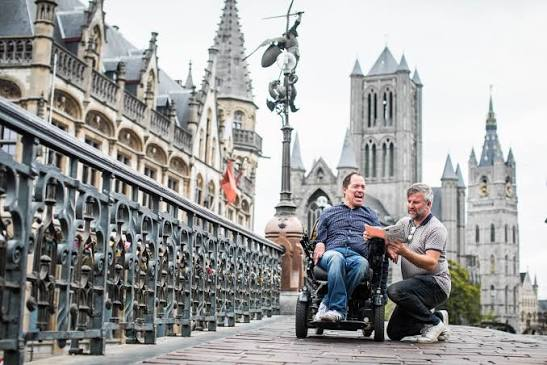

CityLoop Quest Gand


Une visite familiale fonctionne mieux en alternant monuments, jeux d’observation et pauses. Le Gravensteen plaît aux enfants grâce aux remparts et à l’audioguide humoristique, mais ses escaliers sont nombreux. Le Huis van Alijn offre des objets du quotidien faciles à commenter entre générations. Kina et le GUM privilégient la curiosité scientifique. Plutôt que d’enchaîner trois grands musées, choisissez une visite principale et laissez du temps pour les quais, un parc ou une gourmandise.
Les poussettes roulent correctement sur de nombreuses rues piétonnes, mais les pavés, bordures et ponts peuvent fatiguer. Un modèle robuste est plus confortable qu’une petite poussette de voyage. Des toilettes publiques et tables à langer existent dans plusieurs musées et équipements municipaux, sans être présentes à chaque place. Repérer à l’avance deux points de repli évite de transformer une pause urgente en chasse au trésor.
L’accessibilité varie fortement dans le patrimoine ancien. Le Beffroi dispose d’un ascenseur pour une partie du parcours, mais certaines marches subsistent. Le Gravensteen ne peut rendre accessibles toutes ses tours et salles. Les musées contemporains ou rénovés, comme le STAM, le MSK et le GUM, fournissent des informations détaillées sur les ascenseurs, fauteuils et sanitaires adaptés. Il faut consulter la page d’accessibilité de chaque lieu plutôt que supposer qu’un pictogramme couvre l’ensemble du parcours.
Pour les visiteurs ayant une sensibilité sensorielle, les heures d’ouverture peuvent être plus calmes que l’après-midi et certains musées proposent des ressources spécifiques. Les Gentse Feesten, marchés de Noël et grands événements produisent bruit, foule et modifications de circulation. Un casque antibruit, des étapes courtes et un espace vert proche peuvent aider. Le Citadelpark, les jardins de la Bijloke et certains quais offrent des respirations, même s’ils ne sont pas toujours silencieux.
Les transports publics acceptent poussettes et fauteuils dans la limite de l’espace disponible, mais tous les anciens arrêts n’offrent pas la même facilité d’accès. Les trams récents et les quais aménagés sont préférables. En famille, un bateau couvert peut constituer une pause assise, à condition de vérifier l’embarquement. La meilleure stratégie reste souple : prévoir un itinéraire principal, une version raccourcie et un lieu intérieur de secours selon l’énergie et la météo.
Les jeux d’observation transforment facilement le centre en terrain d’enquête. Compter les tours, repérer le dragon du Beffroi, chercher les métiers sculptés sur une façade ou comparer deux pignons maintient l’attention sans ajouter de matériel. Sur les quais, les adultes doivent toutefois surveiller les bordures et escaliers proches de l’eau. Une promenade en bateau peut servir de pause, à condition de vérifier la durée et l’accès aux toilettes avant l’embarquement.
Par mauvais temps, un itinéraire souple évite les tensions. Le STAM, le Huis van Alijn, le GUM ou Kina peuvent devenir le cœur de la journée, avec une courte sortie entre deux averses. Plusieurs musées proposent des casiers, mais les règles concernant poussettes et grands sacs varient. Pour les visiteurs sensibles au bruit, les premières heures d’ouverture sont généralement plus paisibles que les après-midi de week-end. Les familles avec un besoin spécifique gagneront à contacter directement le lieu : une information précise sur un ascenseur, un siège ou un espace calme vaut mieux qu’une promesse générale d’accessibilité.
Les parcs complètent utilement le patrimoine. Le Citadelpark offre pelouses, arbres et musées voisins ; les Gentbrugse Meersen conviennent à une demi-journée plus nature ; Bourgoyen-Ossemeersen permet d’observer les oiseaux sans activité payante. Ces espaces donnent aux enfants le droit de courir après les salles silencieuses. Prévoir une gourde, une petite collation et un vêtement de rechange évite des achats précipités. La meilleure journée familiale n’est pas celle qui coche le plus de monuments, mais celle dont chacun garde une scène précise.